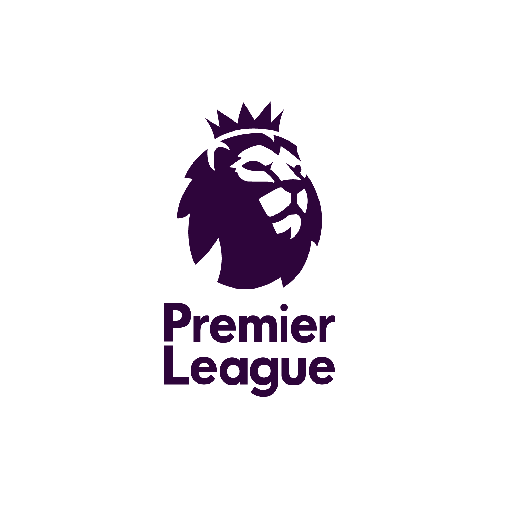
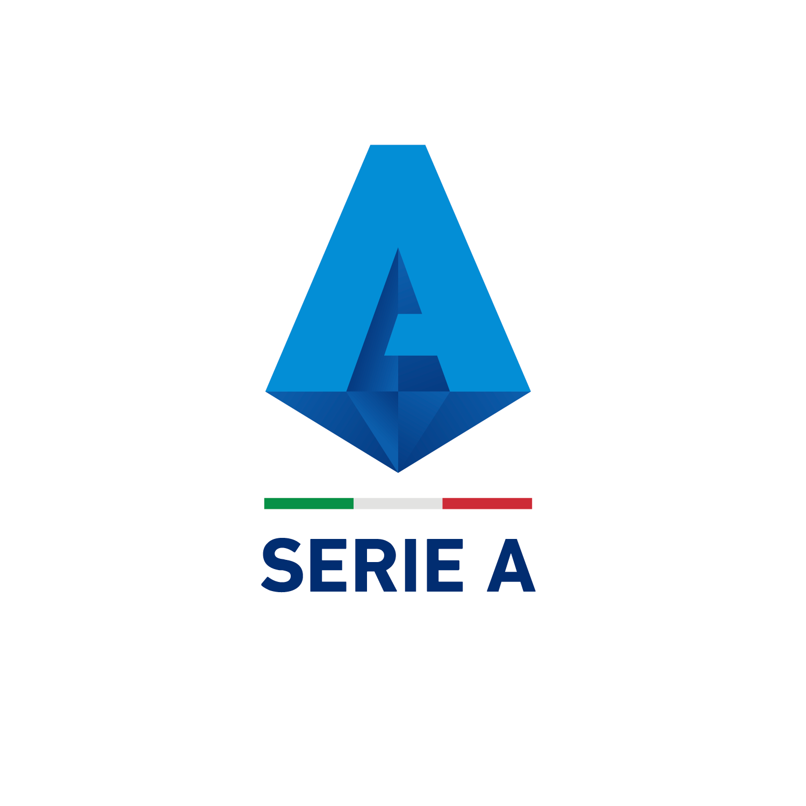
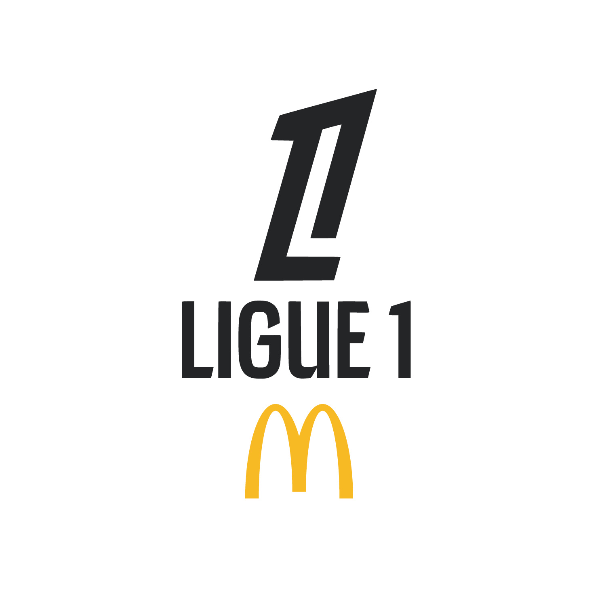

As ligas que movem
o futebol mundial
Da Inglaterra ao Brasil, conheça o formato, a tradição e os principais clubes de cada uma das competições mais importantes do planeta.

Premier League
Criada em 1992, é considerada a liga mais assistida do mundo, com transmissão em mais de 190 países. Reúne 20 clubes em turno e returno, com forte concorrência entre times tradicionais e grupos que investiram pesado nas últimas décadas — o que torna o campeonato um dos mais equilibrados e imprevisíveis da Europa.
Principais clubes

La Liga
A liga espanhola é sinônimo de tradição técnica e de um dos maiores clássicos do esporte: o El Clásico, entre Real Madrid e Barcelona. Fundada em 1929, já revelou e reuniu alguns dos maiores jogadores da história do futebol.
Principais clubes

Serie A
Berço do "catenaccio" e de um futebol historicamente tático, a Serie A reúne rivalidades centenárias, como o Derby d'Italia entre Juventus e Inter de Milão, e clubes que marcaram época nas competições europeias.
Principais clubes

Bundesliga
Conhecida pela maior média de público do mundo e pelo modelo de sócio-torcedor "50+1", a Bundesliga combina organização, formação de jovens talentos e estádios sempre lotados de norte a sul da Alemanha.
Principais clubes

Ligue 1
Vitrine mundial de jovens talentos, a liga francesa combina o poderio financeiro do Paris Saint-Germain com clubes formadores que revelam craques para os principais campeonatos da Europa.
Principais clubes
Brasileirão Série A
O principal campeonato das Américas reúne 20 clubes em pontos corridos e é reconhecido pela paixão das torcidas e pela força de suas rivalidades regionais, além de ser celeiro constante de jogadores para o futebol europeu.
Principais clubes
UEFA Champions League
A competição de clubes mais cobiçada do planeta reúne os melhores times de cada país europeu em busca da "orelhuda". Desde 1955, a disputa consagra os grandes nomes do futebol continental e movimenta o mundo a cada quarta-feira.
Alguns dos clubes que já disputaram a competição
Tabela de classificação
Exemplo de tabela da Premier League. Os quatro primeiros colocados destacados em dourado se classificam à fase de grupos da Champions League.
| Pos | Time | J | V | E | D | GP | GC | SG | Pts |
|---|---|---|---|---|---|---|---|---|---|
| 1 | Liverpool | 38 | 25 | 9 | 4 | 78 | 38 | +40 | 84 |
| 2 | Arsenal | 38 | 22 | 10 | 6 | 70 | 35 | +35 | 76 |
| 3 | Manchester City | 38 | 21 | 10 | 7 | 72 | 42 | +30 | 73 |
| 4 | Chelsea | 38 | 20 | 9 | 9 | 66 | 44 | +22 | 69 |
| 5 | Newcastle United | 38 | 19 | 10 | 9 | 64 | 45 | +19 | 67 |
| 6 | Aston Villa | 38 | 18 | 11 | 9 | 58 | 48 | +10 | 65 |
| 7 | Manchester United | 38 | 16 | 10 | 12 | 55 | 50 | +5 | 58 |
| 8 | Tottenham Hotspur | 38 | 15 | 9 | 14 | 57 | 55 | +2 | 54 |